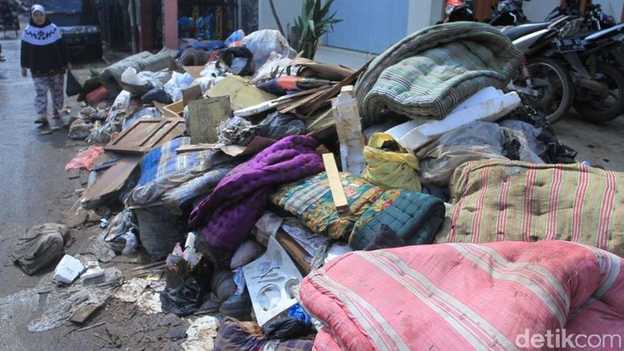

Tips Bersihkan Rumah Usai Banjir, Supaya Kasur dan Sofa Bisa Dipakai Lagi
Achmad Reyhan Dwianto, Meytha Cahyasari - detikHealth
Jakarta -
Sebagian warga sudah mulai membersihkan rumah dari lumpur dan sampah usai banjir melanda Jabodetabek beberapa hari lalu. Pekerjaan bersih-bersih rumah ini sangat diperlukan untuk mencegah penyakit berdatangan kepada penghuninya.
CEO dari penyedia jasa layanan bersih-bersih (cleaning service) KliknClean, Hendra, punya tips bersih-bersih pascabanjir bagi para penghuni rumah. Hal yang harus diperhatikan terutama furnitur seperti kasur, sofa, dan bantal.
Menurut Hendra furnitur yang dapat menyerap air dengan cepat sangat rawan jika terkena banjir. Berikut metode yang bisa digunakan untuk membersihkannya:
- Pencucian di luar ruangan atau jika dilakukan di dalam ruangan pastikan memiliki ventilasi baik.
- Melakukan pencucian dengan cairan pembersih (disinfektan) pada seluruh permukaan kasur dengan cara dimiringkan dan disandarkan pada dinding.
- Melakukan pengeringan pada seluruh permukaan kasur dan sofa. Bila mungkin dengan mesin ekstraktor (vakum).
- Hasil pencucian kasur dan sofa akan lebih maksimal jika setelah pengerjaan di jemur di luar ruangan (dengan terik matahari) dan sirkulasi udara yang baik.
Agar proses bersih-bersih berjalan lancar, Ela dari penyedia jasa layanan Fazz Clean menyarankan agar pemilik rumah mengeluarkan dahulu semua barang-barang. Proses pengerjaan dimulai dari interior dalam rumah lalu furnitur secara terpisah.
"Jadi pada saat barang masuk itu semuanya sudah bersih. Kalau misalkan masih ada barang otomatis nggak akan 100 persen bersih ruangan tersebut," kata Ela saat dihubungi detikcom.